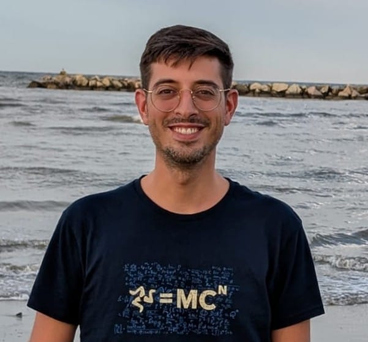

Hi, I’m Giovanni Saraceno. I graduated in Mathematics from the University of Trento and obtained my PhD in Statistics from the University of Trento in June 2021. I spent two years as Postdoctoral Research Associate at the University at Buffalo, New York, USA and from October 2024 I am a fixed-term Assistant Professor (Ricercatore a tempo determinato di tipo A) at the Department of Statistical Sciences at University of Padova, Italia.
My principal area of research are robust statistics, directional statistics, kernel-based methods, neural networks, neuroscience applications.
Contacts
Department of Statistical Sciences, University of Padova
Via Cesare Battisti, 241 - 35121 Padova
Office: 156